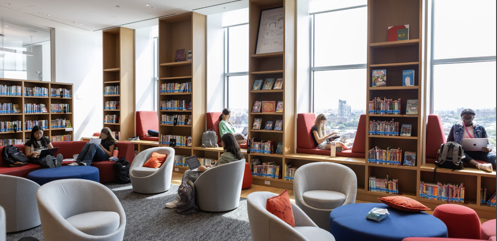

Explore Campus Life


Welcome to the Student Resource Gallery
Discover life at Oklahoma City University — from engaging classroom learning to hands-on projects and creative workshops. This gallery highlights student collaboration, innovation, and the vibrant campus environment.